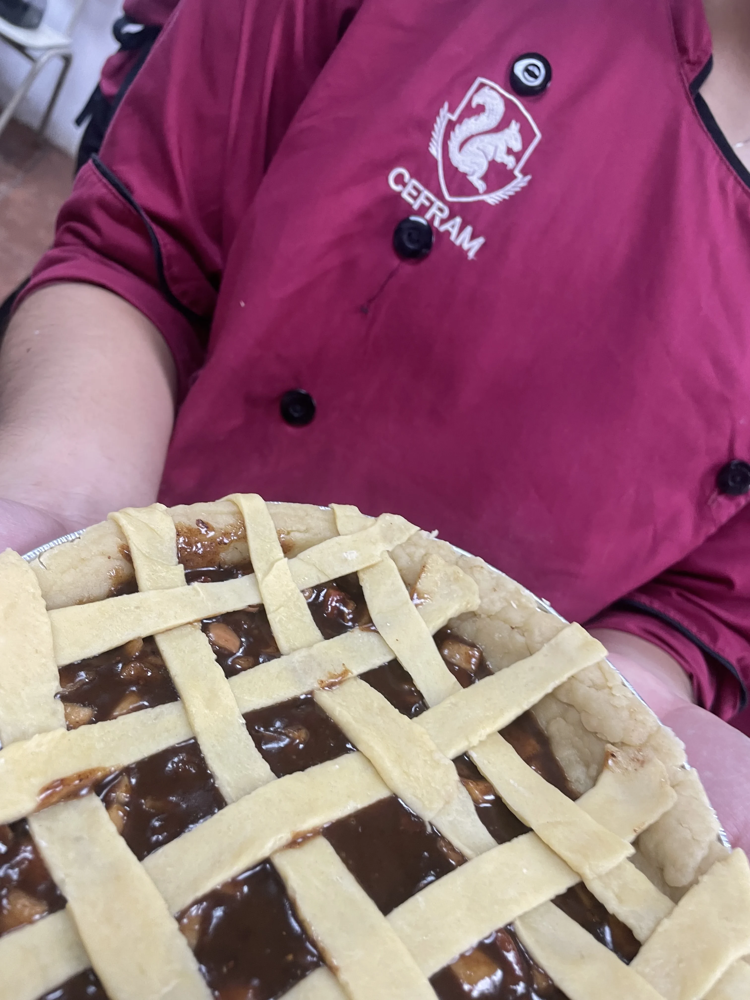
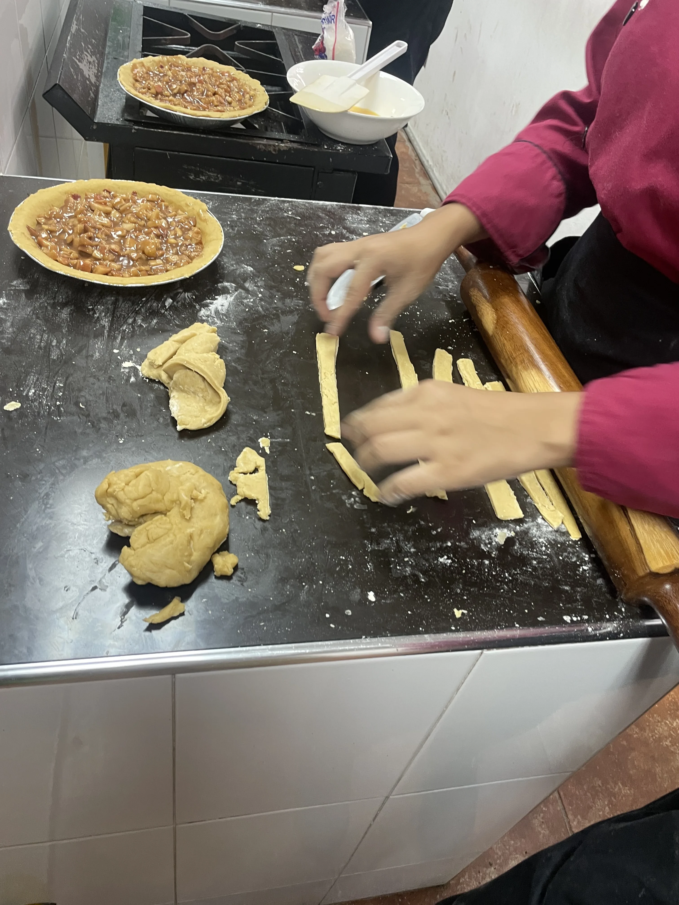
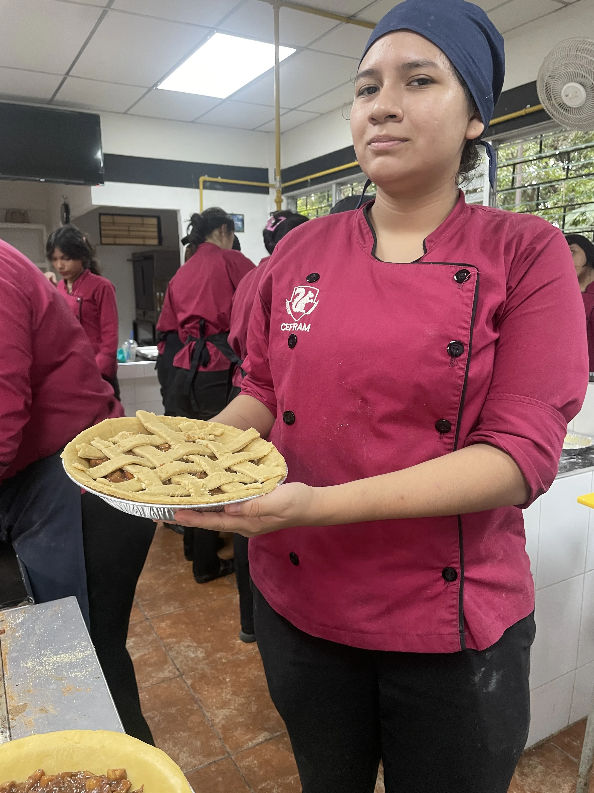
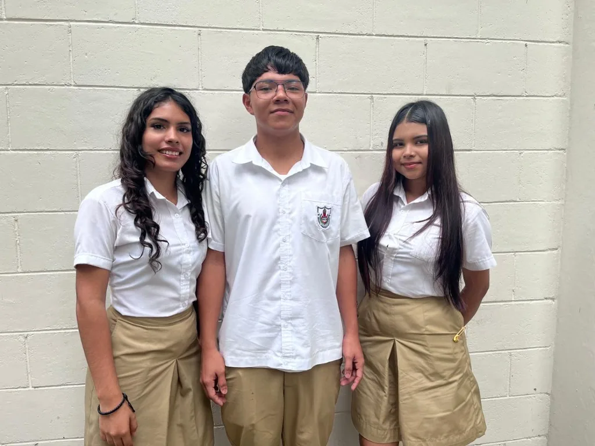
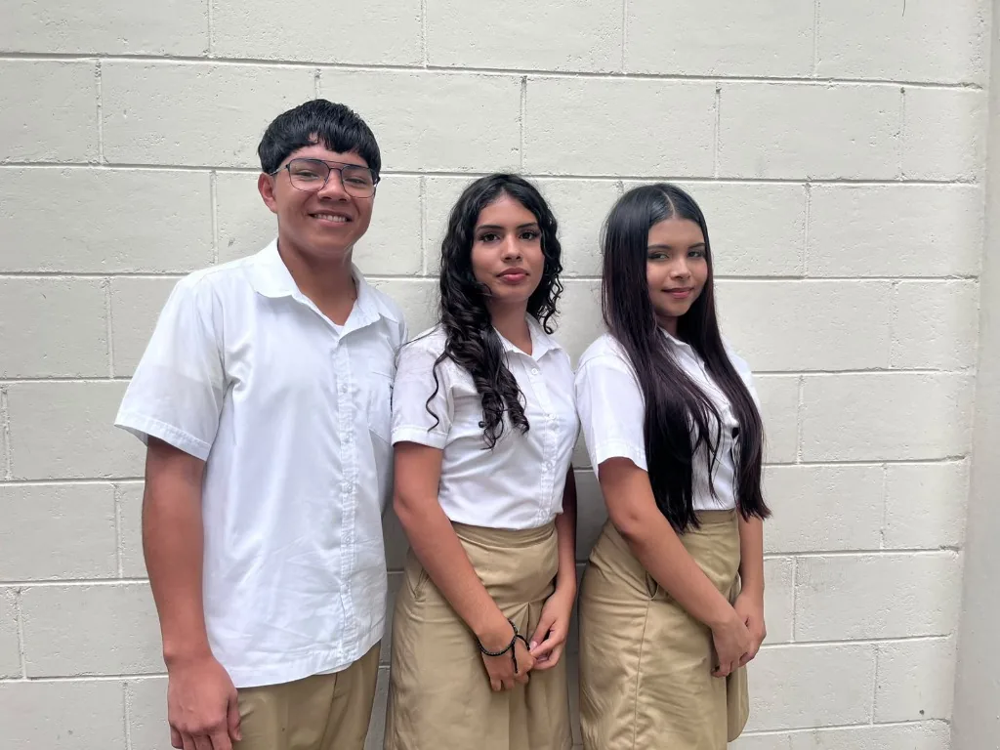
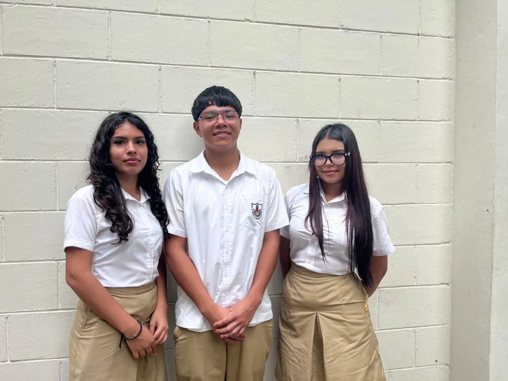

Bachillerato Técnico Productivo
Una preparación práctica vinculada con actividades del sector productivo y las oportunidades del entorno laboral.
01
Servicios Turísticos
Esta especialidad prepara para conocer y apoyar servicios de hospitalidad, agencias de viajes, guiado y actividades turísticas. Se desarrollan habilidades de atención, comunicación y conocimiento del entorno para ofrecer experiencias cuidadas a visitantes y viajeros.
El aprendizaje se complementa con acceso a la cocina para realizar prácticas vinculadas con la preparación y el servicio de alimentos, y con la posibilidad de participar en prácticas remuneradas.
Galería de Servicios Turísticos



02
Logística Global Comercial
La especialidad introduce los procesos que permiten trasladar productos desde su origen hasta su destino. Incluye contenidos sobre cadenas de suministro, operaciones aduaneras, gestión de inventarios y transporte de mercancías, además de fortalecer la organización y la comprensión del comercio global.
Galería de Logística Global Comercial


